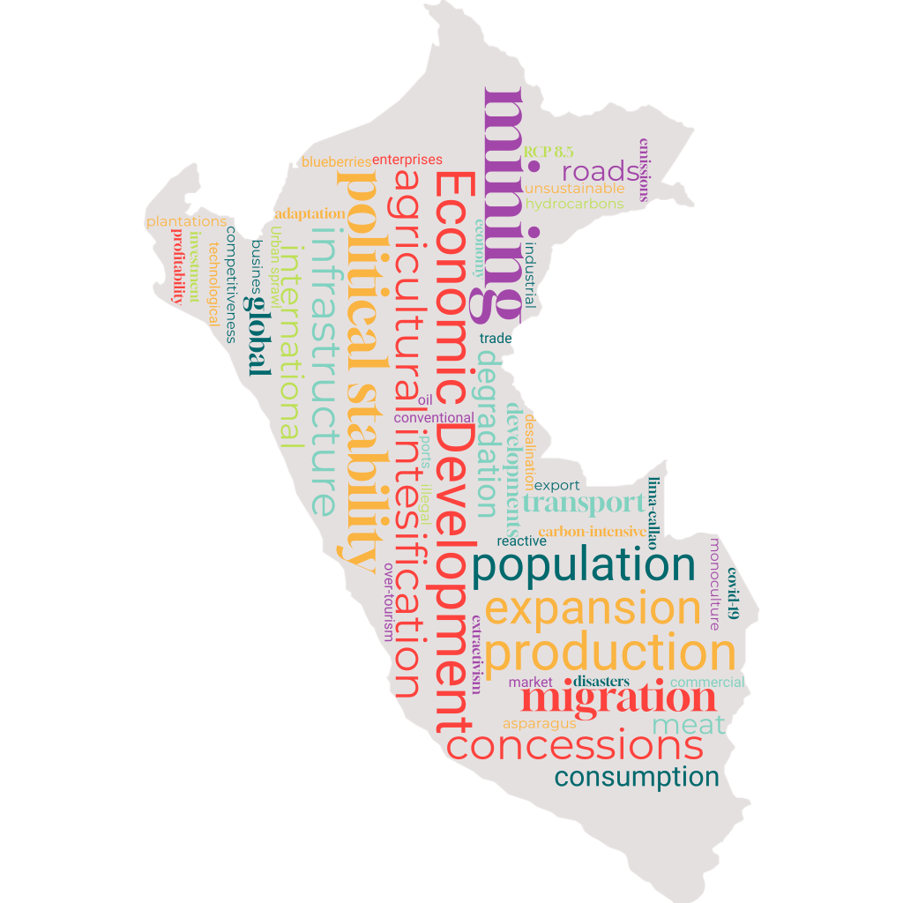
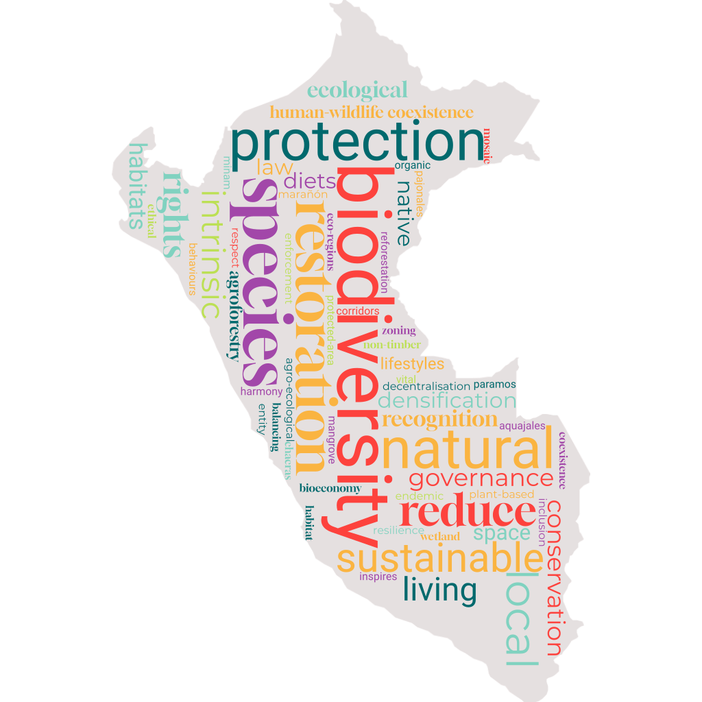

We present three normative scenarios (Nature for Nature, Nature for Society, and Nature as Culture) and one exploratory scenario (Business as Usual) of future landscape change in Peru. Click on the column headers to expand/collapse scenarios and click on row headers to expand/collapse subject areas.
 Climate Change: RCP 4.5
Climate Change: RCP 4.5
 Population: 39.81 million by 2060
Population: 39.81 million by 2060
 Economic development: 1007 billion USD
Economic development: 1007 billion USD
Value perspective on nature: Instrumental
 Protected areas (proportion of Peru under protection): 25% by 2030
Protected areas (proportion of Peru under protection): 25% by 2030

Climate Change: RCP 2.6
Population: 37.21 million
Economic development: 1007 billion USD
Value perspective on nature: Mainly Intrinsic
Protected areas (proportion of Peru under protection): 30% by 2030
